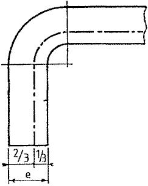
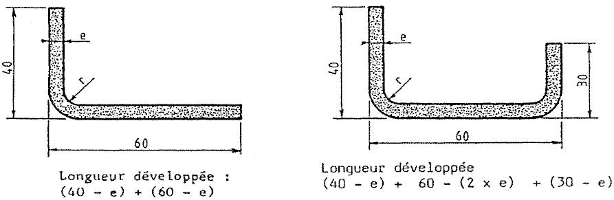
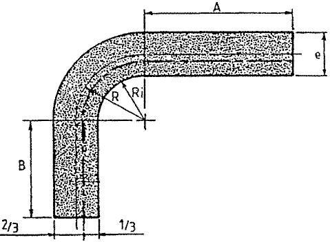
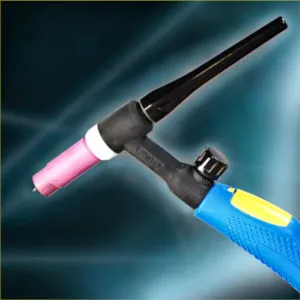
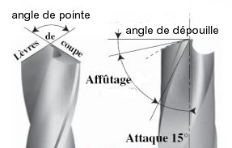

⚒️ Métallerie & Soudure ⚡
Aide-mémoires techniques professionnels © 2025 - Michel Grillon
📐 Calculs
- Calcul barreaudage
- Escalier (Blondel)
- Pliage-coudage
- Développé cintrage
- Vitesse rotation de perçage
⚡ Soudage
- Calcul soudage
- Procédés soudage
- Soudure normalisation
📊 Tableaux de références
- Vitesses de coupe
- Diamètre perçage
- Classification formes têtes vis
- Poutrelles
📋 Références
- Plan (projections européennes)
- Tolérance géométrique
- Gueule de loup
- Les escaliers
🔢 Calcul Barreaudage
Répartition régulière de poteaux et barreaux verticaux
Calculer le barreaudage d’un ouvrage :
- 1 : Je détermine la côte maximale entre barreaux admissible par le DTU => 90 ou 110.
- 2 : Je calcul le nombre d’intervalles => Cote entre tableaux ou poteaux / 110 + 1 ép. de barreaux
- 3 : Je détermine le nombre de barreaux => Nombre d’intervalles - 1
- 4 : Je calcul la cote cumulé des barreaux => Nombres de barreaux X épaisseur de barreaux
- 5 : Je calcul la cote cumulé des intervalles => Cote entre tableaux ou poteaux – cote cumulé des barreaux
- 6 : Je calcul la cote entre barreaux => Cote cumulé des intervalles / le nombre d’intervalles
Exemple de répartition de barreaux selon le DTU :
La côte entre poteaux est de 1150 mm, les barreaux sont constitués en fer carré de 12 X 12, démontrer les calculs pour chaque étapes :
1: DTU 110 mm
2: 1150 / 122 = 9.42 = 10 intervalles
3: 10 – 1 = 9 barreaux
4: 9 x 12 = 108 mm
5: 1150 – 108 = 1042 mm
6: 1042 / 10 = 104.2 mm
7: résultat = la cote entre barreaux est de 104.2 mm
Calcul en ligne :
Étape 1/6 - DTU Maximum
Je détermine la côte maximale entre barreaux admissible par le DTU.
DTU = 110 mm
Étape 2/6 - Nombre d'intervalles
Étape 3/6 - Nombre de barreaux
Je détermine le nombre de barreaux
Calcul :
Nombre de barreaux :
Étape 4/6 - Côte cumulée des barreaux
Je calcule la côte cumulée des barreaux
Calcul :
Côte cumulée barreaux : mm
Étape 5/6 - Côte cumulée des intervalles
Je calcule la côte cumulée des intervalles
Calcul :
Côte cumulée intervalles : mm
Étape 6/6 - Côte entre barreaux
Je calcule la côte entre barreaux
Calcul :
Résultat final : La côte entre barreaux est de mm
🪜 Escalier - Loi de Blondel
Loi de Blondel : 2H + G = 640
G (Giron) = 300 en moyenne
Selon l'architecte François Blondel (1618-1686), 2h + g = 63 cm est le meilleur rapport pour monter un escalier en dépensant le moins d'énergie.
Principe de calcul d'un escalier selon Blondel
Exemples de calculs
| Hauteur Étages | Hauteur Marches | Giron | 2h+g | Nb marches | Longueur Totale |
|---|---|---|---|---|---|
| 260 cm | 18 cm | 24 cm | 60 cm | 15 | 336 cm |
| 270 cm | 20 cm | 24 cm | 64 cm | 14 | 312 cm |
| 280 cm | 19 cm | 24 cm | 62 cm | 15 | 336 cm |
| 290 cm | 19 cm | 24 cm | 62 cm | 16 | 360 cm |
| 300 cm | 18 cm | 24 cm | 60 cm | 17 | 384 cm |
📐 Pliage-Coudage
PLIAGE
🔍 Longueur développée
Calcul longueur développée :
côte ext - épaisseur = côte interne, + addition de toutes les côtes intérieures
On ne tiend pas compte de la fn si inférieur 4 mm épaisseur.
Puis côte machine : côte extérieure - 1/2 épaisseur ou côte interne + 1/2 épaisseur
🔍 Fibre neutre (fn)
Ri = rayon intérieur, ép = épaisseur tôle
- Ri/ép = 1 ⇒ fn 1/3 ép côté intérieur
- Ri/ép = 2 ⇒ fn 2/5 ép côté intérieur
- Ri/ép = 3 ou + ⇒ fn 1/2 ép côté intérieur = fn au milieu
Position de la fibre neutre selon le rapport Ri/épaisseur
Pour les tôles épaisses, la fibre neutre se situe en général : au ⅓ de e si Ri ≤ 3 × e, sinon au milieu de e si Ri > 3 ×
Calcul des longueurs développées de pliage
Tôles minces jusqu'à 4 mm d'épaisseur :

Il faut procéder au tracé en prenant les cotes extérieures.
Remarque : On ne tient pas compte de la fibre neutre.
Tôles minces supérieures à 4 mm d'épaisseur :

Tenir compte de l'arrondi : calculer son développement en prenant la longueur développée au ⅓ de l'épaisseur.
R = Ri + ⅓ × e si Ri ≤ 4 × e, sinon R = Ri + ½ × e si Ri > 4 × e
La formule unique et valable pour calculer un développé est: 3.14 x R (Ri+ fibre neutre)x angle de pliage le tout divisé par 180
📝 Rappels importants :
- Tôles minces jusqu'à 4 mm d'épaisseur : On ne tient pas compte de la fibre neutre
- Côte machine = côte extérieure - 1/2 épaisseur
- Ou côte interne + 1/2 épaisseur
- R = Ri + ⅓ × e si Ri ≤ 4 × e
- R = Ri + ½ × e si Ri > 4 × e
🔄 Développé Cintrage
Calcul longueur développée
Formule : Ø - 1/2 épaisseur = Ø fn
Pour un cercle : Ø fn × Pi = longueur développée cercle
Cintrage partiel : (° / 360) × 2 × Pi × r
Principe du calcul de longueur développée en cintrage
📝 Exemple de calcul :
r = 600, épaisseur = 6
Rfn = 600 - 3 = 597 mm
Longueur développée = Pi × r = 597 × 3.14 = 1874.58 mm
Pour demi-cercle : Pi × Ø × 180 / 360
🔄 Vitesse rotation de perçage
Guide des vitesses de rotation selon le matériau
📝 Rappel - Affûtage forets :
- 120° général
- 90° fraisage
- 60° centrage
⚡ Calcul Soudage
🔥 Soudage SAEE (MMA)
Formule : IA = 50 × (Ø Électrode - 1)
Tableau de référence MMA
| Diamètre | Épaisseur | Ampérage mini |
|---|---|---|
| 1.6 | 1.5 | 40 |
| 2 | 1.5 → 3 | 55 |
| 2.5 | 2.5 → 6 | 80 |
| 3.2 | 5 → 8 | 110 |
| 4 | 8 et + | 150 |
🔥 MIG-MAG
Formules :
Intensité = (Tension - 14) × 20
Tension = 14 + (0.05 × Intensité)
📝 Gaz de protection
MAG : Ar-O2 / Ar-CO2 / Ar-CO2-O2 / CO2
MIG : Argon / Ar-Hé / Hé-Ar / Hélium
Réglage débit : Ø Fil × 10 ou Ø Interne de la buse

🔥 TIG
Guide des paramètres selon le procédé de soudage
Quels gaz ?
- Tous les métaux : Argon
- Aciers inoxydables (austénitique) : Argon ou Argon + Hydrogène
- Alliages d'Aluminium : Argon ou Argon + Hélium
- Protection envers des inox : Argon ou Azote
Quel débit ?
Débit du gaz = diamètre intérieur de buse (1mm = 1 litre)
Choix du diamètre de buse : toujours le plus grand possible
Choix du courant :
- Continu : Acier, Inox, Cuivre, Titane, Nickel
- Alternatif : Alluminium et ses alliages
Choix intensité :
- Inox : 25 A x épaisseur à souder
- Acier : 30 A x épaisseur à souder
- Alu pur : 40 A x épaisseur à souder
- AG 5 : 30 A x épaisseur à souder
- Cuivre : 80 A x épaisseur à souder
Choix tungstène :
La couleur définit sa composition
- gris (WC-20) ou des dorés (WL-15) : pour acier et inox,
- vert (WP) : pour aluminium
- E3 (terres rares) couleur lilas (violet) et dorées : pour acier, inox, Alu
- Courant continu : tungstène théorié (rouge, WT)
- Courant alternatif : tungstène pur (W, Vert)
Rappel :
Affutage entre 30° et 45 °
Préparation des bords
Réglage soudure tig : définition des paramètres de soudage
Plus d'informations : Réglage soudure TIG – Les paramètres
⚠️ Rappels techniques
Polarités
Directe : Masse sur "+" et pince sur "-"
Indirecte : Masse sur "-" et pince sur "+"
Enrobages (COBRA)
Cellulosique, Oxydant, Basique, Rutile, Acide & Spéciaux.
Angles
Soudure plate : 70°
Angulaire : 70° vertical, 45° horizontal
📋 Procédés de Soudage
Aperçu des principaux procédés de soudage
| Numéro | Sigle | Désignation |
|---|---|---|
| 111 | ARC E.E. / SMAW / MMA | Soudage à l'arc avec électrodes enrobées |
| 114 | FIL FOURRÉ SANS GAZ / INNERSHIELD | Soudage à l'arc avec fil électrode fourré sans gaz |
| 131 | MIG / GMAW | Soudage à l'arc en atmosphère inerte avec fil électrode fusible |
| 135 | MAG / GMAW | Soudage à l'arc en atmosphère active avec fil électrode fusible |
| 136 | FIL FOURRÉ AVEC GAZ / FCAW | Soudage à l'arc en atmosphère active avec fil électrode fourré |
| 141 | TIG / GTAW | Soudage à l'arc en atmosphère inerte avec électrode de tungstène |
| 15 | PLASMA / PAW | Soudage à l'arc électrique au plasma |
| 21 | POINT / RSW | Soudage par résistance par point |
| 22 | MOLETTE / RSEW | Soudage par résistance à la molette |
| 23 | BOSSAGE / RPW | Soudage par résistance par bossage |
| 24 | ÉTINCELAGE / FW | Soudage en bout par étincelage |
| 311 | OXYA / OAW | Soudage au chalumeau avec flamme oxyacétylénique |
| 52 | LASER / LBW | Soudage par faisceau laser |
| 781 | GOUJON / SW | Soudage à l'arc de goujons |
📐 Soudure - Normalisation
📏 Éléments de cotation
Les symboles de soudure permettent de définir précisément les caractéristiques des cordons sur les plans techniques.
Principaux symboles de soudure selon la norme
🔺 Symboles élémentaires

Principaux symboles de soudure selon la norme
🔄 Soudure périphérique
Principaux symboles de soudure périphérique
🏗️ Soudure au chantier
Principaux symboles de soudure de chantier
📍 Position des symboles élémentaires
Principaux symboles de soudure selon la norme
📏 Cotation des cordons de soudure
Les dimensions et caractéristiques des cordons sont indiquées selon des règles précises :
- Gorge effective (a)
- Longueur utile (l)
- Longueur totale
- Pas de soudure discontinue
Principaux symboles de soudure selon la norme
⚡ Vitesse de Coupe
V max : 6000 tr/mn
La vitesse de coupe est la distance parcourue en une minute, par un point situé sur le listel du foret. Elle est exprimée en m/min. Elle est fonction du matériau percé, de la qualité du foret et de la lubrification.
- Pour un acier S235 la vitesse indicative est comprise entre 20 à 40 m/min
- Pour un acier S355 la vitesse indicative est comprise entre 23 à 30 m/min
- Pour une fonte la vitesse indicative est comprise entre 12 à 18 m/min
- Pour un acier inox austénitique la vitesse indicative est comprise entre 10 à 20 m/min
- Pour un aluminium et ses alliages la vitesse indicative est comprise entre 30 à 60 m/min
- Pour un cuivre et ses alliages la vitesse indicative est comprise entre 30 à 60 m/min
RAPPEL :

Affûtage des forets
L’angle de dépouille de 1° à 10°, permet au foret de ne pas talonner.
L’angle de pointe influe sur la facilité de pénétration. Il varie en fonction de la matière à percer.
- 120° pour l’acier doux,
- 90° pour le laiton,
- 135° pour l’aluminium,
- 135° pour les aciers inoxydables
Guide des vitesses de rotation selon le matériau
| Vc m/mn | Ø 3 | Ø 4 | Ø 5 | Ø 6 | Ø 8 | Ø 10 | Ø 12 | Ø 16 | Ø 20 |
|---|---|---|---|---|---|---|---|---|---|
| 10 | 1062 | 796 | 637 | 531 | 398 | 318 | 265 | 199 | 159 |
| 20 | 2123 | 1592 | 1274 | 1062 | 796 | 637 | 531 | 398 | 318 |
| 30 | 3185 | 2389 | 1911 | 1592 | 1194 | 955 | 796 | 597 | 478 |
| 40 | 4246 | 3185 | 2548 | 2123 | 1592 | 1274 | 1062 | 796 | 637 |
| 50 | 5308 | 3981 | 3185 | 2654 | 1990 | 1592 | 1327 | 995 | 796 |
| 60 | 6369 | 4777 | 3822 | 3185 | 2389 | 1911 | 1592 | 1194 | 955 |
| 70 | 7431 | 5573 | 4459 | 3715 | 2787 | 2229 | 1858 | 1393 | 1115 |
| 80 | 8493 | 6369 | 5096 | 4246 | 3185 | 2548 | 2123 | 1592 | 1274 |
| 90 | 9554 | 7166 | 5732 | 4777 | 3583 | 2866 | 2389 | 1791 | 1433 |
| 100 | 10616 | 7962 | 6369 | 5308 | 3981 | 3185 | 2654 | 1990 | 1592 |
| 110 | 11677 | 8758 | 7006 | 5839 | 4379 | 3503 | 2919 | 2189 | 1752 |
| 120 | 12739 | 9554 | 7643 | 6369 | 4777 | 3822 | 3185 | 2389 | 1911 |
| 130 | 13800 | 10350 | 8280 | 6900 | 5175 | 4140 | 3450 | 2588 | 2070 |
| 140 | 14862 | 11146 | 8917 | 7431 | 5573 | 4459 | 3715 | 2787 | 2229 |
| 150 | 15924 | 11943 | 9554 | 7962 | 5971 | 4777 | 3981 | 2986 | 2389 |
📊 Tableaux avance par dent
1 dent (max 50 mm/s)
| tr/mn | 0.05 | 0.1 | 0.15 | 0.2 | 0.3 |
|---|---|---|---|---|---|
| 1000 | 1 | 2 | 3 | 3 | 5 |
| 1500 | 1 | 3 | 4 | 5 | 8 |
| 2000 | 2 | 3 | 5 | 7 | 10 |
| 3000 | 3 | 5 | 8 | 10 | 15 |
| 4000 | 3 | 7 | 10 | 13 | 20 |
| 6000 | 5 | 10 | 15 | 20 | 30 |
2 dents
| tr/mn | 0.05 | 0.1 | 0.15 | 0.2 | 0.3 |
|---|---|---|---|---|---|
| 1000 | 2 | 3 | 5 | 7 | 10 |
| 2000 | 3 | 7 | 10 | 13 | 20 |
| 3000 | 5 | 10 | 15 | 20 | 30 |
| 4000 | 7 | 13 | 20 | 27 | 40 |
| 6000 | 10 | 20 | 30 | 40 | 60 |
🔩 Diamètre Perçage
Formule : Ø Perçage (mm) = M - Pas nominal
Correspondance diamètres de perçage pour taraudage
| M | Pas Nominal | Ø Perçage (mm) |
|---|---|---|
| M 1 | 0.25 | 0.75 |
| M 1.1 | 0.25 | 0.85 |
| M 1.2 | 0.25 | 0.95 |
| M 1.4 | 0.3 | 1.1 |
| M 1.6 | 0.35 | 1.25 |
| M 1.8 | 0.35 | 1.45 |
| M 2 | 0.4 | 1.6 |
| M 2.2 | 0.45 | 1.75 |
| M 2.5 | 0.45 | 2.05 |
| M 3 | 0.5 | 2.5 |
| M 3.5 | 0.6 | 2.9 |
| M 4 | 0.7 | 3.3 |
| M 4.5 | 0.75 | 3.7 |
| M 5 | 0.8 | 4.2 |
| M 6 | 1 | 5 |
| M 7 | 1 | 6 |
| M 8 | 1.25 | 6.8 |
| M 9 | 1.25 | 7.8 |
| M 10 | 1.5 | 8.5 |
| M 11 | 1.5 | 9.5 |
| M 12 | 1.75 | 10.2 |
| M 14 | 2 | 12 |
| M 16 | 2 | 14 |
| M 18 | 2.5 | 15.5 |
| M 20 | 2.5 | 17.5 |
| M 22 | 2.5 | 19.5 |
| M 24 | 3 | 21 |
| M 27 | 3 | 24 |
| M 30 | 3.5 | 26.5 |
| M 33 | 3.5 | 29.5 |
| M 36 | 4 | 32 |
| M 39 | 4 | 35 |
| M 42 | 4.5 | 37.5 |
| M 45 | 4.5 | 40.5 |
| M 48 | 5 | 43 |
| M 52 | 5 | 47 |
🔩 Classification Formes Têtes Vis
Différents types de têtes et empreintes de vis
🔧 Entraînement externe
| Type | Code | Description |
|---|---|---|
| H | Hexagonal | Construction mécanique |
| C | Cylindrique | Construction mécanique |
| - | Six lobes externes | Vis de bandages |
🔩 Empreintes
| Code | Type | Usage |
|---|---|---|
| HC | Six pans creux (BTR/Allen) | Construction mécanique |
| X | Six lobes internes (Torx) | Vissage automatique |
| Z | Cruciforme (Pozidriv) | Vissage automatique |
| H | Cruciforme (Phillips) | Standard |
| S | Fente (pièce monnaie) | Grand public |
| Q | Carré (Robertson) | Spécialisé |
| TS | TooSpeed | Multi-compatible |
⚡ Multi-entraînement
| Code | Description |
|---|---|
| HS | Hexagonal fendu |
| HCS | Six pans creux fendu |
| ZS | Cruciforme fendu |
| XS | Six lobes fendu |
🔒 Spéciaux
- Aster1 : Cinq lobes creux (aéronautique)
- Pentalobe : Exclusif Apple
- Triangulaire : Sécurité
- Indévissable : Sens unique (menuiserie ext.)
- "Antivol" : Formes brevetées (mobilier urbain)
📝 Types de têtes de vis
Indépendamment du système d'entraînement, il existe plusieurs formes :
- Vis à tête fraisée et plate
- Vis à tête fraisée bombée
- Vis à tête bombée
- Vis à tête cylindrique
- Vis à tête plate
- Vis trompette
TooSpeed : Accepte cinq tournevis : fendu, cruciforme, Pozidriv, carré et TooSpeed
🏗️ Poutrelles
🔧 Profilés laminés à chaud - I, H, U, L
Guide complet des poutrelles et profilés métalliques
Comparatif des profils IPE, IPN, HE et UPN
📐 Profilés en I
Comparatif des profils IPE, IPN, HE et UPN
IPE - Poutrelles I européennes
Profilé à ailes parallèles d'épaisseur constante. Caractéristiques mécaniques équivalentes, mais plus légers que les profilés IPN et permettent des raccords plus faciles.
IPN - Poutrelles normales européennes
Le profilé IPN se distingue du profilé IPE par ses ailes inclinées.
🏛️ Profilés en H
Comparatif des profils IPE, IPN, HE et UPN
HE-HL-HD-HP
- HE : Profilé à larges ailes parallèles
- HL : Ailes plus larges, hauteur minimum requise
- HD : Profilé spécial pour colonnes
- HP : Applications en fondation, palplanches
🔧 Profilés en U
Comparatif des profils IPE, IPN, HE et UPN
UPE - UPN
UPE : Profilé en U à ailes parallèles d'épaisseur constante.
UPN : Se distingue du profilé UPE par ses ailes inclinées.
Disponibles pour faibles hauteurs.
📐 Profilés en L (cornières)
Comparatif des profils IPE, IPN, HE et UPN
Cornières : À ailes égales ou inégales
Utilisées pour les structures d'assemblage et de renforcement.
🏢 Poutrelles spéciales
IFB - Integrated Floor Beams
Comparatif des profils IPE, IPN, HE et UPN
Ces poutrelles présentent des ailes extra-larges soudées sur la partie inférieure. Cela permet de placer facilement des éléments de plancher.
- Type A : Fabriquées au départ de demi-poutrelles IPE ou HE
- Type B : Réalisées à l'aide de demi-poutrelles HP
SFB - Slim Floor Beam
Comparatif des profils IPE, IPN, HE et UPN
Ces poutrelles sont réalisées en soudant une tôle rapportée en plus sous la semelle d'une poutrelle HEB ou HEM.
Disponible : de HEB 140 à HEB 320
📐 Plan - Projections Européennes
🇪🇺 Convention européenne (ou projection européenne)
La vue de dessus est placée sous la vue de face, la vue de droite, à gauche de la vue de face... Ce qui revient, entre deux vues, à faire « rouler » la pièce au-dessus du plan sur lequel elle est censée être posée.
Disposition des vues selon la convention européenne
💡 Logique des projections
La convention européenne correspond à la logique des projections : ce qui est vu « de droite » (depuis la droite) se projette à gauche, et donc se dessine à gauche, etc.
Cette méthode permet une représentation cohérente et standardisée des pièces techniques dans le dessin industriel.
📏 Tolérance Géométrique
🔢 Définitions
S = Acier de construction courant
235 = Limite élasticité en Méga Pascal
Tolérance géométrique = Côte nominale
(exemple: 51)
Application des tolérances sur une pièce technique
📊 Exemple de calcul
Côte nominale: 51
Maximum
+1 → 52
Minimum
-2 → 49
Intervalle = 3
(Addition du max + mini)
🎯 Applications pratiques
Les tolérances géométriques définissent les limites acceptables de variation dimensionnelle dans la fabrication de pièces métalliques. Elles garantissent :
- L'interchangeabilité des pièces
- La qualité d'assemblage
- Le respect des contraintes mécaniques
- La conformité aux normes industrielles
tolérance géométrique 1
tolérance géométrique 2
🐺 Gueule de Loup
🔧 Définition
La gueule de loup est une technique de découpe utilisée en métallerie pour réaliser des assemblages précis entre profilés, notamment pour les tubes et poutrelles.
Assemblage par gueule de loup sur tubes ronds
📐 Principe
La gueule de loup consiste à découper l'extrémité d'un tube ou profilé selon un profil courbe ou angulaire qui épouse parfaitement la forme du tube récepteur.
Applications :
- Assemblages de tubes ronds
- Raccords de poutrelles
- Structures de charpente métallique
- Garde-corps et rampes
🛠️ Techniques de réalisation
Méthodes de découpe :
- Plasma : Précision élevée, finition soignée
- Oxycoupage : Pour épaisseurs importantes
- Scie : Découpe manuelle traditionnelle
- Laser : Précision maximale
📏 Points clés
- Tracé précis obligatoire
- Respect des angles d'assemblage
- Préparation des chanfreins pour soudure
- Contrôle dimensionnel avant soudage
⚠️ Recommandations
- Utiliser un gabarit pour tubes identiques
- Prévoir un jeu de montage (1-2mm)
- Ébavurer soigneusement après découpe
- Protéger contre la corrosion